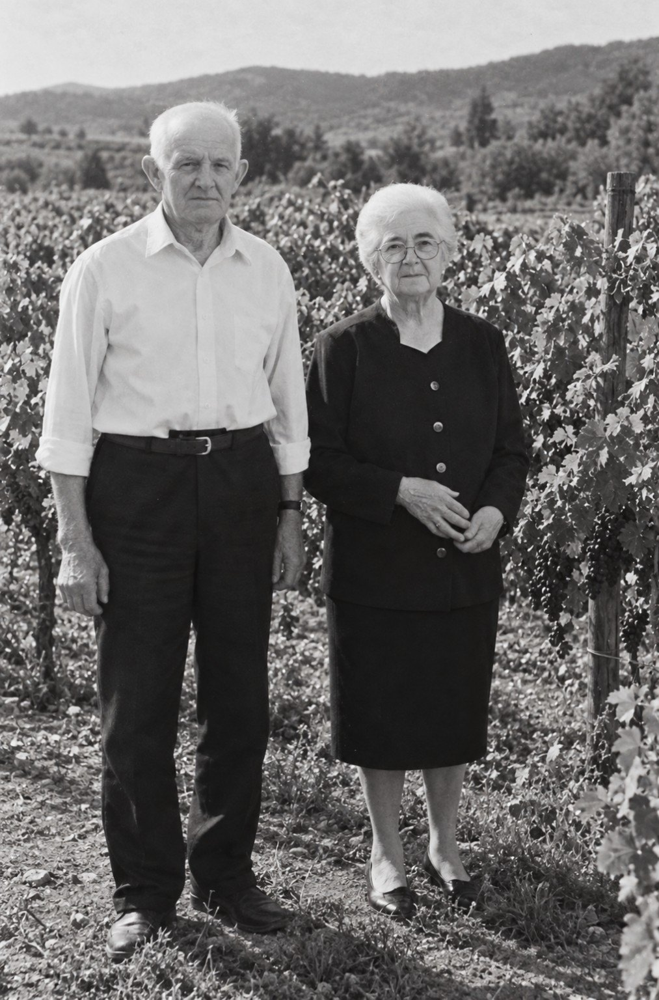
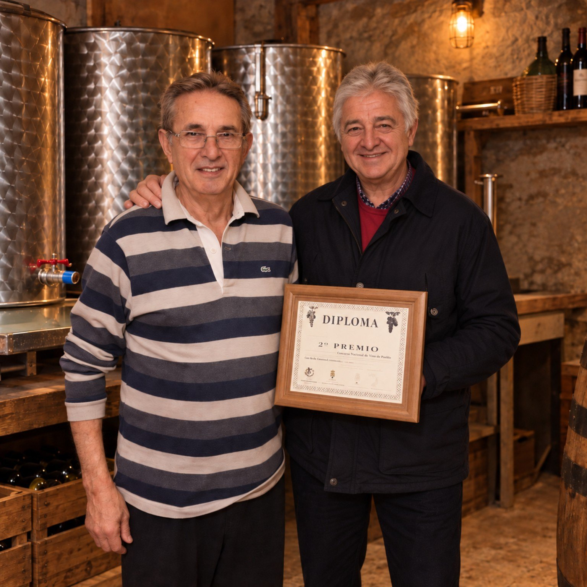
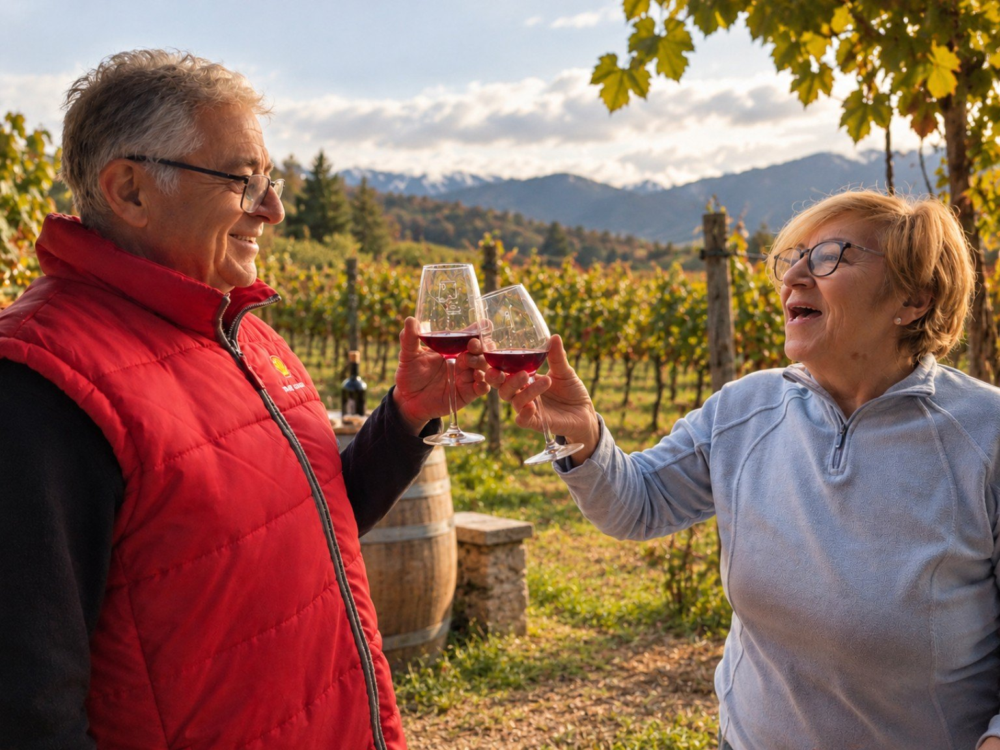
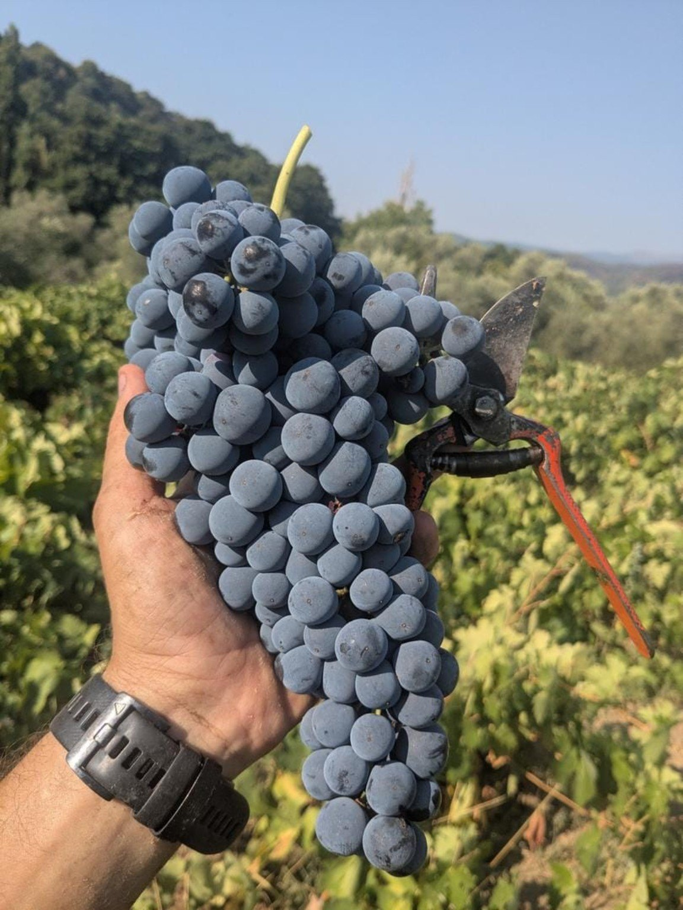
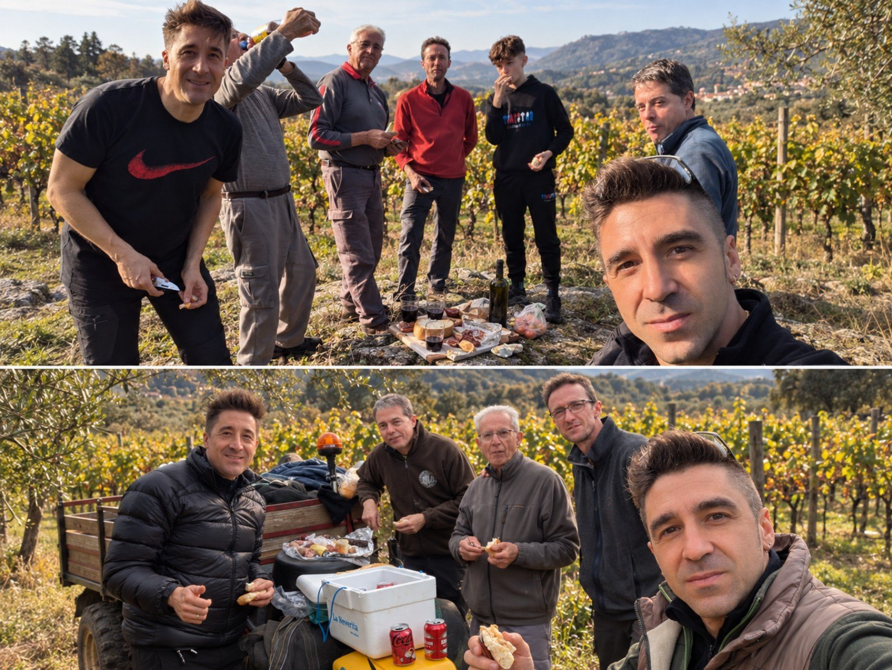
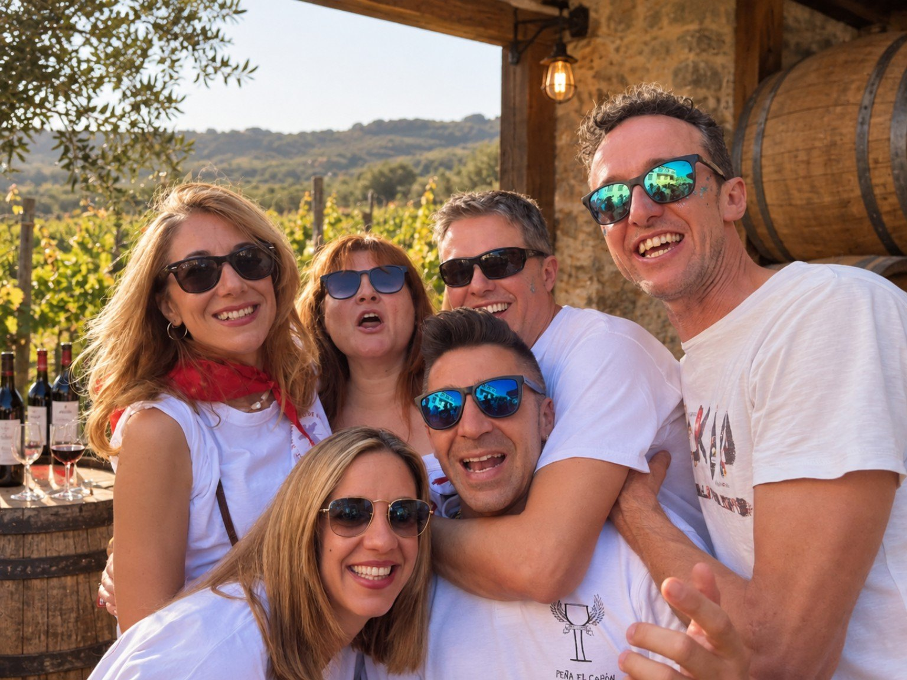
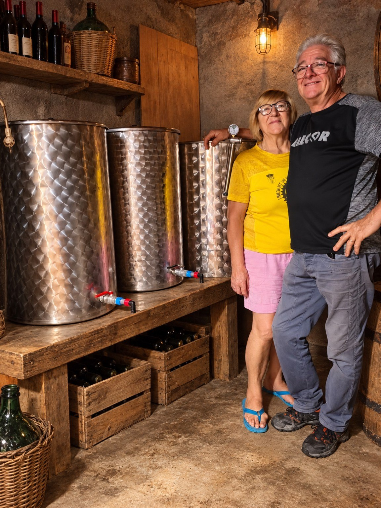

Campanela
Una historia de familia, tierra y vino a los pies de la Sierra de Gredos.
Todo empezó en casa
Antes de que existiera Bodegas Jose Navarro, antes de las etiquetas y antes incluso de que una botella llevara el nombre de Campanela, ya había vino.

Leandro Navarro comenzó a elaborar vino en el garaje de su propia casa, en San Esteban del Valle. Hombre de campo, trabajador, honrado y profundamente ligado a su pueblo, durante años fue también pregonero de San Esteban.
A su lado estaba Visitación García, aunque para hijos y nietos siempre ha sido, sencillamente, la abuela Visi.
Compañera de Leandro y corazón de la familia, hablar de aquellos años es hablar también de ella. Porque esta historia no nace solamente del vino, sino de una casa, una familia y una forma de vivir y compartir las cosas.
Leandro hacía vino porque era algo natural en aquel entorno y en aquella época. Sin grandes pretensiones. Con sus manos, con paciencia y con los conocimientos que daban el campo, los años y la tradición.
Jose y Ruben,
una nueva etapa

La siguiente generación decidió recoger aquel legado.
Jose, hijo de Leandro y Visi, y su cuñado Ruben Gomez comenzaron juntos una nueva etapa.
Compartieron trabajo, ilusión y muchas horas de elaboración hasta dar forma a lo que acabaría convirtiéndose en Bodegas Jose Navarro.
Aquellas primeras elaboraciones trajeron también pequeñas satisfacciones y reconocimientos en San Esteban del Valle, animándoles a continuar perfeccionando sus vinos sin perder la manera tradicional de hacerlos.
¿Y por qué Campanela?
Hay nombres que se buscan durante meses. El nuestro llevaba toda una vida esperando.

Cuando Jose era joven, en el pueblo comenzaron a conocerle por un mote: “Campanela”.
Años después, cuando llegó el momento de poner nombre a este vino, no hizo falta mirar demasiado lejos.
Es parte de la juventud de Jose y del pueblo en el que empezó todo. Y quizá por eso tenía sentido que acabara escrito en una botella.
La Cerrailla

Nuestra historia continúa en San Esteban del Valle, a los pies de la Sierra de Gredos.
Entre las pequeñas fincas de la familia se encuentra La Cerrailla, situada a cierta altura y hogar de la viña de la que nace este vino.
Aquí queremos seguir haciendo las cosas con una idea sencilla: intervenir lo mínimo y respetar lo máximo.
Una elaboración inspirada en la tradición de la zona, buscando conservar el carácter de la uva y permitiendo que el vino hable también del lugar del que procede.
Trabajo, familia
y buenos momentos
Porque detrás de cada botella no están solamente la viña y la bodega. Están las personas.

Vendimias, jornadas de trabajo, comidas improvisadas entre las cepas, conversaciones y muchas manos ayudando cuando llega el momento.

Una forma sencilla
de hacer vino

No buscamos disfrazar el vino.
Queremos acompañarlo, respetando la uva, la tradición y aquello que cada cosecha trae consigo.
Una forma de elaborar ligada a nuestra familia y a esta tierra, manteniendo vivo el espíritu con el que comenzó todo.
La historia continúa
Lo que empezó en el garaje de una casa terminó convirtiéndose en algo que hoy comparte toda una familia.
De Leandro y la abuela Visi.
De Jose y Ruben.
De La Cerrailla.
De nuestra familia y nuestra tierra.
Varias generaciones después, seguimos haciendo vino por una razón sencilla: porque forma parte de nuestra historia.